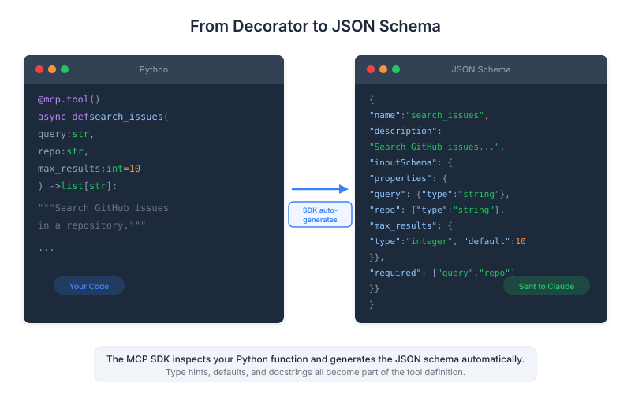

| Item | Detail |
|---|---|
| Exam Domain | D2 — Tool Design & MCP Integration (18%) |
| Task Statements | T2.1 Design and implement tool schemas; T2.5 Use MCP SDK to define tools with type safety |
| Source | introduction-to-model-context-protocol / 02-tools-and-inspector / Lesson 06 |
The Python MCP SDK (FastMCP) lets you define tools as decorated Python functions with type hints, automatically generating JSON schemas and handling validation without manual schema writing.

FastMCP is the official Python SDK for building MCP servers. It eliminates the tedious process of manually writing JSON tool schemas by leveraging Python's type system.
from mcp.server.fastmcp import FastMCP
# Create an MCP server instance
mcp = FastMCP("document-tools")
The FastMCP constructor takes a server name string. This name identifies your MCP server to clients during the connection handshake.
Key Insight
The server name is not just a label — it appears in client logs and debugging output. Choose a descriptive name that reflects the server's purpose (e.g., "github-tools", "document-tools", "database-query").
Tools are defined as regular Python functions decorated with @mcp.tool(). FastMCP inspects the function signature to auto-generate the tool's JSON schema.
@mcp.tool()
def read_doc_contents(file_path: str) -> str:
"""Read and return the contents of a document.
Args:
file_path: The path to the document to read.
"""
with open(file_path, "r") as f:
return f.read()
What happens behind the scenes:
read_doc_contentsfile_path: str → {"type": "string"}The auto-generated JSON schema looks like:
{
"name": "read_doc_contents",
"description": "Read and return the contents of a document.",
"inputSchema": {
"type": "object",
"properties": {
"file_path": {
"type": "string",
"description": "The path to the document to read."
}
},
"required": ["file_path"]
}
}
Key Insight
The docstring is critical for Claude's tool selection accuracy. A vague docstring means Claude may choose the wrong tool or miss it entirely. Write docstrings that clearly state what the tool does, when to use it, and what it returns.
For more precise parameter descriptions, use Field from Pydantic:
from pydantic import Field
from typing import Annotated
@mcp.tool()
def edit_document(
file_path: Annotated[str, Field(description="Path to the document to edit")],
new_content: Annotated[str, Field(description="The new content to write to the document")],
create_backup: Annotated[bool, Field(description="Whether to create a .bak backup first")] = True
) -> str:
"""Edit a document by replacing its contents.
Overwrites the file at file_path with new_content.
Optionally creates a backup of the original file.
"""
if create_backup:
import shutil
shutil.copy2(file_path, f"{file_path}.bak")
with open(file_path, "w") as f:
f.write(new_content)
return f"Document {file_path} updated successfully"
Key patterns:
Annotated[type, Field(...)] — Adds rich descriptions to individual parametersField(description=...) to explain what the flag controlsMCP tools handle errors using standard Python exceptions. FastMCP catches exceptions and returns them as error responses to the client.
@mcp.tool()
def read_doc_contents(file_path: str) -> str:
"""Read and return the contents of a document."""
try:
with open(file_path, "r") as f:
return f.read()
except FileNotFoundError:
raise ValueError(f"Document not found: {file_path}")
except PermissionError:
raise ValueError(f"Permission denied: {file_path}")
Best practices for MCP tool errors:
ValueError for user-facing errors (invalid input, not found, etc.)Key Insight
Good error messages are part of tool design. When Claude receives an error like "Document not found: /path/to/file", it can explain the issue to the user or try an alternative approach. A generic "Error occurred" gives Claude nothing to work with.
| Manual Approach | FastMCP Approach |
|---|---|
| Write JSON schema by hand | Auto-generated from type hints |
| Manually validate inputs | Pydantic auto-validation |
| Separate schema and implementation | Schema lives with the code |
| Easy to have schema/code drift | Always in sync |
| Verbose boilerplate | Clean, Pythonic functions |
The auto-validation is particularly powerful. If Claude sends file_path: 42 instead of a string, FastMCP catches the type error before your function runs.
if __name__ == "__main__":
mcp.run()
The mcp.run() method starts the MCP server, defaulting to stdio transport. For HTTP transport:
if __name__ == "__main__":
mcp.run(transport="sse") # Server-Sent Events over HTTP
This lesson is central to Domain 2 (18%). Key exam areas:
@mcp.tool() decorator: Know that it auto-generates JSON schemas from function signaturesAnnotated[type, Field(...)] adds parameter-level descriptions| Front | Back |
|---|---|
What does @mcp.tool() do? |
It decorates a Python function to register it as an MCP tool, auto-generating the JSON schema from the function's name, docstring, type hints, and parameter descriptions. |
| How does FastMCP generate tool descriptions? | From the function's docstring. The first line typically becomes the short description, and the full docstring provides detailed context for Claude's tool selection. |
| How are parameter descriptions added in FastMCP? | Using Annotated[type, Field(description="...")] from Pydantic, or from the Args section of the docstring. |
| What happens when a tool raises a ValueError? | FastMCP catches it and returns it as an error response to the MCP client. Claude then sees the error message and can decide how to respond. |
| How does FastMCP handle input validation? | It uses Pydantic auto-validation based on type hints. If Claude sends the wrong type for a parameter, the error is caught before the function executes. |
What does FastMCP("name") create? |
An MCP server instance with the given name. The name identifies the server to clients during connection and appears in logs. |
| What is the advantage of FastMCP over manual JSON schema writing? | Schema auto-generation from type hints, automatic input validation, schema always in sync with code, and much less boilerplate. |
| How do you make a tool parameter optional in FastMCP? | Give it a default value in the function signature. Parameters with defaults become optional in the generated JSON schema. |